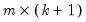

The “name=” option stores results in an  matrix, where

is the number of lagged terms and

is the number of endogenous variables in the VAR. In the first

columns, the
i-th row,
j-th column entry is the Wald statistic for the joint significance of all
i-th lagged endogenous variables in the
j-th equation. These Wald statistics have a

distribution with

degrees of freedom under the exclusion null.
In the last column, the i-th row contains the system Wald statistic for testing the joint significance of all
i-th lagged endogenous variables in the VAR system. The system Wald statistics has a chi-square distribution with

degrees of freedom under the exclusion null.
See “Diagnostic Views” for a discussion other VAR diagnostics.